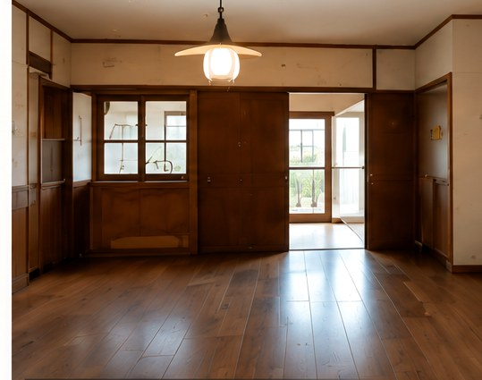
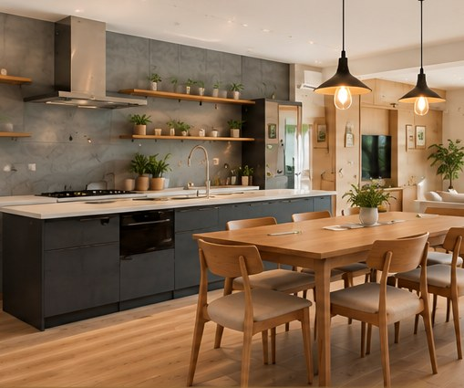
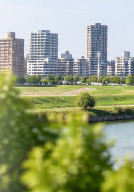

不動産事業（売買・賃貸）
REAL ESTATE
土地・建物の売買・賃貸を通じて、理想の住まい探しをサポートします。

RENOVATION / REAL ESTATE / REFORM
住まいを直すだけではなく、その場所で始まる次の暮らしまで考える。
東川口を拠点に、住まいと不動産の価値をつくるパートナーです。
02CONCEPT
RENOVATION FOR A BETTER LIFE
今の暮らしに合わせて、間取りも、素材も、デザインも。
住まいを見直すリノベーションで、
これからの暮らしに新しい価値をつくります。

A new value
for your life.
今あるものに、
新しい価値を。
03RENOVATION
CREATE A NEW VALUE IN YOUR HOME
戸建て・マンションを問わず、
暮らしに合わせたリノベーションで
理想の住まいをカタチにします。

今の暮らしを、
これからの暮らしへ。
Renovation
for a better tomorrow.


築30年の戸建て住宅(仮)
間取りが細かく、暗い印象の空間でした。
PHOTO：提案用イメージ
間取りを見直し、光が入る開放的なLDKに。
家族が自然と集まる、心地よい空間へ生まれ変わりました。
PHOTO：提案用イメージ
Renovation
after.
暮らしに、もっと選べる価値を。MORE VALUE FOR YOUR LIFE.
REAL ESTATE
土地・建物の売買・賃貸を通じて、理想の住まい探しをサポートします。

RENOVATION
今ある住まいに新しい価値を。ライフスタイルに合わせた空間づくりをご提案します。

REFORM
部分的な改修から全面リフォームまで、快適で安心な暮らしを実現します。

COIN LAUNDRY
地域の暮らしを支えるコインランドリーの運営・サポートを行っています。

Better spaces
Brighter lives.
06ABOUT
ABOUT YUSHIN
2007年(仮)の創業以来、川口市・東川口エリアを中心に、
住まいと不動産に関わるご相談をお受けしてきました。
一つひとつの仕事にきちんと向き合い、
暮らしに寄り添ったご提案を大切にしています。
— YUSHIN COMPANY —

住まいの
可能性を、
これからの
暮らしへ。
MORE VALUE
FOR YOUR LIFE.
YUSHIN
株式会社ユウシン
人と暮らしに、
誠実に。
地域とともに、
これからも。
地域密着で
迅速に対応
いたします。
MAP：提案用イメージ

この街の暮らしを、
もっと心地よく。住まいのことなら、
地域をよく知る私たちに
お任せください。
Closer
to your life.
08FAQ
FREQUENTLY ASKED QUESTIONS
リノベーションについて、
お客様からよくいただくご質問を
まとめました。
ご不明な点がございましたら、
お気軽にお問い合わせください。
— YUSHIN FAQ —
Aはい、無料です。現地調査・お見積もりまで費用はかかりません。まずはお気軽にご相談ください。
Aはい、提携する金融機関のリフォームローンをご利用いただけます。詳しくは担当者までお問い合わせください。
A内容や規模によりますが、一般的な住宅リノベーションでは約1〜3か月が目安です。事前にスケジュールをご案内いたします。
Aはい、可能です。お客様のライフスタイルやご希望に合わせて、専門スタッフがデザイン提案をいたします。
A工事内容によっては可能です。ただし、生活に支障が出る場合もありますので、事前に詳しくご説明し、最適な方法をご提案いたします。
Aはい、工事後も安心してお住まいいただけるよう、保証・アフターサービスをご用意しています。詳細は担当者までご説明いたします。
A戸建て・マンション・店舗・オフィスなど、幅広く対応しています。築年数や構造に関わらず、まずはご相談ください。
Aはい、可能です。部分的なリフォームや設備の交換など、小さな工事からでもお気軽にご相談ください。
09CONTACT
CONTACT US
リノベーションのご相談・お見積もりは無料です。
住まいのことなら、どんな小さなことでも
お気軽にお問い合わせください。
— YUSHIN CONTACT —

Let's talk
about your future.
YUSHIN
株式会社ユウシン
暮らしに、
もっといい
未来を。
理想の暮らしを、一緒にかたちに。
まずはお気軽にご相談ください。